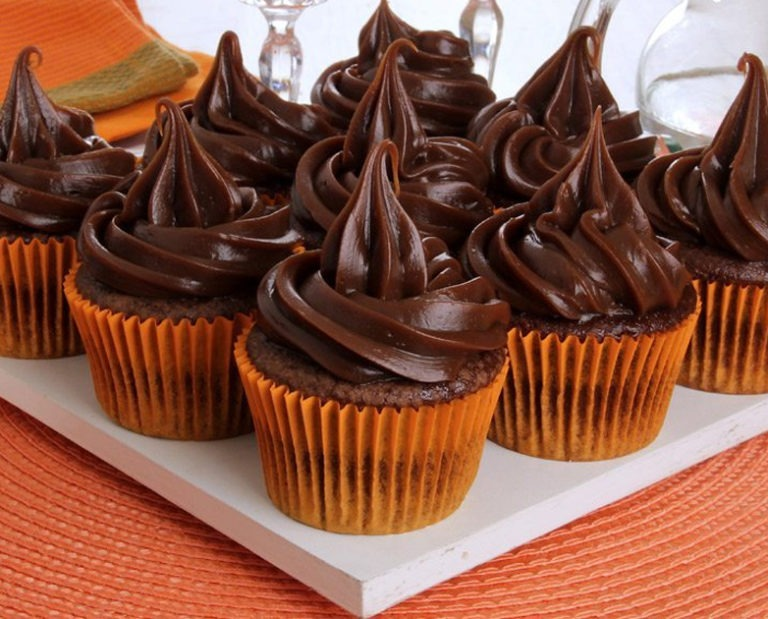

Vou apresentar uma receita de Cupcakes:

2 3/4 xícaras (chá) de farinha de trigo 1 xícara (chá) de manteiga 2 xícaras (chá) de açúcar 1 xícara (chá) de leite 1 colher (sopa) de fermento químico em pó 1 colher (chá) de essência de baunilha 4 unidades de ovo grande
1. Coloque a manteiga na batedeira e bata até ficar cremosa. 2. Acrescente o açúcar aos poucos com a batedeira ligada até que fique uma mistura fofa. 3. Acrescente os ovos um por um sem parar de bater. 4. Tire a mistura da batedeira e acrescente a farinha peneirada, intercalando com o leite. 5. Acrescente a essência de baunilha e por último o fermento. 6. Misture levemente. 7. Pré-aqueça o forno a 180°c. 8. Coloque a massa nas formas. 9. Asse por aproximadamente 20-25 min. 10. Recheie e ponha a cobertura de páscoa que mais lhe agradar.